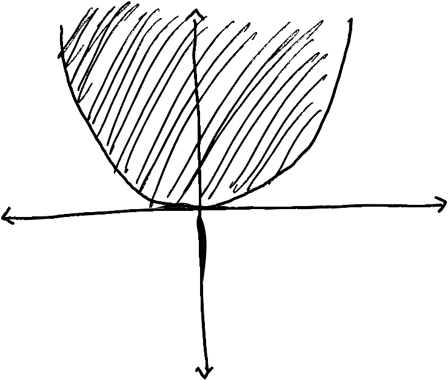

const FinSubset = BitVector
# {1, 3} ⊆ {1, 2, 3}
A = FinSubset([true, false, true])
# {2, 3} ⊆ {1, 2, 3}
B = FinSubset([false, true, true])
(A,B)(Bool[1, 0, 1], Bool[0, 1, 1])We start this book at the very beginning, by asking ourselves the question, What is a dynamical system
Disregarding for a moment the dynamical aspects—forgetting about time—we are immediately led to ponder the more basic issue, What is a mathematical model? What does it tell us? What is its mathematical nature? Mind you, we are not asking a philosophical question: we will not engage in an erudite discourse about the relation between reality and its mathematical description. Neither are we going to elucidate the methodology involved in actually deriving, setting up, postulating mathematical models. What we are asking is the simple question, When we accept a mathematical expression, a formula, as an adequate description of a phenomenon, what mathematical structure have we obtained?
We view a mathematical model as an exclusion law. A mathematical model expresses the opinion that some things can happen, are possible, while others cannot, are declared impossible. Thus Kepler claims that planetary orbits that do not satisfy his three famous laws are impossible. In particular, he judges nonelliptical orbits as unphysical. The second law of thermodynamics limits the transformation of heat into mechanical work. Certain combinations of heat, work, and temperature histories are declared to be impossible. Economic production functions tell us that certain amounts of raw materials, capital, and labor are needed in order to manufacture a finished product: it prohibits the creation of finished products unless the required resources are available.
We formalize these ideas by stating that a mathematical model selects a certain subset from a universum of possibilities. This subset consists of the occurrences that the model allows, that it declares possible. We call the subset in question the behavior of the mathematical model.
— Jan Willem Polderman and Jan C. Willems, Introduction to Mathematical Systemcs Theory: A Behavioral Approach, 1998
In this lecture, we are going to learn some category theory for thinking about constraints.
We start at the beginning; what is a subset?
We can think about subsets of a set X categorically in two ways.
Given a set U with an injection \iota_U \colon U \hookrightarrow X, we can construct a characteristic function \chi_U \colon X \to \mathbb{B} via
\chi_U(x) = \begin{cases} \mathtt{true} & \text{if there exists $u \in U$ with $\iota_U(u) = x$} \\ \mathtt{false} & \text{otherwise} \end{cases}
Likewise, given a function \chi \colon X \to \mathbb{B}, we can construct
|\chi| = \{ x \in X | \chi(x) = \mathtt{true} \}
with the natural inclusion |\chi| \hookrightarrow X.
If we start with a characteristic function, form its corresponding inclusion, and then take the characteristic function of that, we get back to where we started.
However, if we start with the injection \{a,b\} \hookrightarrow \{1,2,3\} with a \mapsto 1, b \mapsto 2, take its characteristic function, and then form its corresponding inclusion, we get \{1,2\} \hookrightarrow \{1,2,3\}. This is isomorphic, but not equal.
When we talk about subsets, we shouldn’t really care about \{a,b\} \hookrightarrow \{1,2,3\} vs. \{1,2\} \hookrightarrow \{1,2,3\}. Thus, the characteristic function point of view is sometimes more useful because it gives us a canonical way of talking about a certain subset.
The advantage of the injection point of view is that we can talk about monomorphisms in any category, and thus talk about subobjects in any category, but a good analogue of \mathbb{B} doesn’t exist in any category. Categories that have an analogue of \mathbb{B} (along with some other properties) are called toposes or topoi (this is where the name Topos Institute comes from).
For now, we are going to just work with sets, and just work with the characteristic function point of view. But you should think about how you might generalize what we are doing to general subobjects.
Definition 1 Given a set X, there is a poset \mathcal{P}(X) where the objects are maps \chi \colon X \to \mathbb{B}, and \chi \leq \chi' if whenever \chi(x) = \mathtt{true} then \chi'(x) = \mathtt{true}.
Example 1 We can think of a mathematical equation as specifying a subset. For instance, the equation
y \geq x^2
specifies a subset of \mathbb{R}^2 that looks like Figure 1.
This corresponds to the function
\chi(x,y) = \begin{cases} \mathtt{true} & \text{if $y \geq x^2$} \\ \mathtt{false} & \text{otherwise} \end{cases}

Definition 2 If P is some statement, then we define [P] to be \mathtt{true} if P is true, and \mathtt{false} otherwise. So we can define the \chi from Example 1 via
\chi(x,y) = [y \geq x^2]
This is known as an “Iverson bracket”.
Example 2
const FinSubset = BitVector
# {1, 3} ⊆ {1, 2, 3}
A = FinSubset([true, false, true])
# {2, 3} ⊆ {1, 2, 3}
B = FinSubset([false, true, true])
(A,B)(Bool[1, 0, 1], Bool[0, 1, 1])What happens if we have two equations? For instance, what if we have y \geq x^2 and y \leq 4 - x^2? Well, then we take the intersection of the two corresponding subsets (recall that the intersection is the categorical product).
Definition 3 Given two subsets \chi_1, \chi_2 \colon X \to \mathbb{B}, their intersection is given by
(\chi_1 \cap \chi_2)(x) = \chi_1(x) \wedge \chi_2(x)
where \wedge \colon \mathbb{B} \times \mathbb{B} \to \mathbb{B} is the AND operation.
We can do this in Julia by broadcasting the && operator.
A .&& B3-element BitVector:
0
0
1Functions can act on subsets in a number of ways. Suppose that we have a function f \colon X \to Y, and a subset \chi \colon Y \to \mathbb{B}. Then we can simply compose to get a subset \chi \circ f \colon X \to \mathbb{B}.
Definition 4 Given a function f \colon X \to Y and a subset \chi \colon Y \to \mathbb{X}, the pullback f^\ast(\chi) is defined to be \chi \circ f.
This is called “pulling back” because in the subobject picture this corresponds to a categorical pullback operation. Sometimes this is also called the preimage.
function preimage(f::FinFunction, U::FinSubset)
FinSubset([U[y] for y in f.values])
end
X, Y = FinSet(3), FinSet(3)
f = FinFunction(X, Y, [2, 1, 1])
preimage(f, A)3-element BitVector:
0
1
1Example 3 Consider the function f \colon \mathbb{R} \to \mathbb{R}^2 defined by f(x) = (x,x). Then if we pull back the \chi in Example 1, we get the subset
(f^\ast(\chi))(x) = \chi(f(x)) = [x \geq x^2] = [0 \leq x \leq 1]
Example 4 Consider the function f \colon \mathbb{R}^3 \to \mathbb{R}^2 defined by f(x,y,z) = (x,z). Then pulling back \chi from Example 1 gives us the subset
(f^\ast(\chi))(x,y,z) = [x \geq z^2]
Note that this subset does not depend on y, because changing the value of y doesn’t affect the value of f(x,y,z).
The operation of pullback is nice from a categorical standpoint because it preserves the ordering of subsets.
Proposition 1 Suppose f \colon X \to Y is a function, and \chi, \chi' \in \mathcal{P}(Y) with \chi \subseteq \chi'. Then f^\ast(\chi) \subseteq f^\ast(\chi').
Proof. Let x \in X, and suppose that f^\ast(\chi)(x) = \mathtt{true}. Then \chi(f(x)) = \mathtt{true}. By \chi \subseteq \chi', \chi'(f(x)) = \mathtt{true}. Thus, f^\ast(\chi')(x) = \mathtt{true}.
This makes \mathcal{P} into a contravariant functor from \mathsf{Set} to \mathsf{Pos}. This means that a morphism f \colon X \to Y turns into a order-preserving map f^\ast \colon \mathcal{P}(Y) \to \mathcal{P}(X); the directionality gets flipped.
It turns out that we can also travel in the other direction.
Definition 5 Given a function f \colon X \to Y and a subset \chi \in \mathcal{P}(X), there is a subset f_\ast(\chi) \in \mathcal{P}(Y) defined by
f_\ast(\chi)(y) = [\exists x \in X, \chi(x) \wedge f(x) = y]
The subset f_\ast(\chi) is called the direct image of \chi under f.
This also preserves the ordering of subsets, so with this, we get a another functor, this time covariant (i.e., normal), from \mathsf{Set} \to \mathsf{Pos}.
We can implement this in Julia as well.
function direct_image(f::FinFunction, U::FinSubset)
V = FinSubset(zeros(Bool, f.codom.n))
for i in 1:f.dom.n
if U[i]
V[f.values[i]] = true
end
end
V
endOne way of thinking about Example 1 is that we are expressing a relation between x \in \mathbb{R} and y \in \mathbb{R}.
Definition 6 A relation between a set X and a set Y is a subset R \subset X \times Y.
We could implement this in Julia using the notion of product that we had in the previous lecture. But the more convenient thing to do is to use BitMatrix.
const FinRelation = BitMatrix
R = FinRelation([i < j for i in 1:4, j in 1:4])4×4 BitMatrix:
0 1 1 1
0 0 1 1
0 0 0 1
0 0 0 0We can think of this as a “joint constraint”. If you know that (x,y) \in R and you know the value of x, then you know something about the value of y, and vice versa. A special case of this is when knowing the value of x tells you exactly what y is; this is the next example.
Example 5 Given a function f \colon X \to Y, we can make a relation \mathrm{graph}(f) \subset X \times Y via
\chi_{\mathrm{graph}(f)}(x,y) = [f(x) = y]
This gives rise to the natural question: given a relation R \subset X \times Y (which lets you know something about y if you know something about x) and a relation S \subset Y \times Z (which lets you know something about z if you know something about y) can we compose them in some way? The answer, unsurprisingly, is yes.
Definition 7 Given a relation R \subset X \times Y and a relation S \subset Y \times Z, we can form a relation
S \circ R \subset X \times Z
via the characteristic function
\chi_{S \circ R}(x,z) = [\exists y \in Y, \chi_R(x,y) \wedge \chi_S(y,z)]
We can implement this with something that looks suspiciously like matrix multiplication
function compose(R::FinRelation, S::FinRelation)
n,m1,m2,l = (size(R)..., size(S)...)
@assert m1 == m2
m = m1
FinRelation([
any(R[i,j] && S[j,k] for j in 1:m)
for i in 1:n, k in 1:l
])
end
compose(R, R)4×4 BitMatrix:
0 0 1 1
0 0 0 1
0 0 0 0
0 0 0 0If we replaced the any with a sum and the && with a *, this would be matrix multiplication.
Of course, this forms a category.
Definition 8 There is a category \mathsf{Rel} where:
As we said in the beginning, relations are very important for understanding the behavior of systems. We’ve only scratched the surface of the category theory of relations, but this is important ground work for what is to come.
Exercise 1 Redo this whole lecture using the subobject point of view instead of the characteristic function part of view.